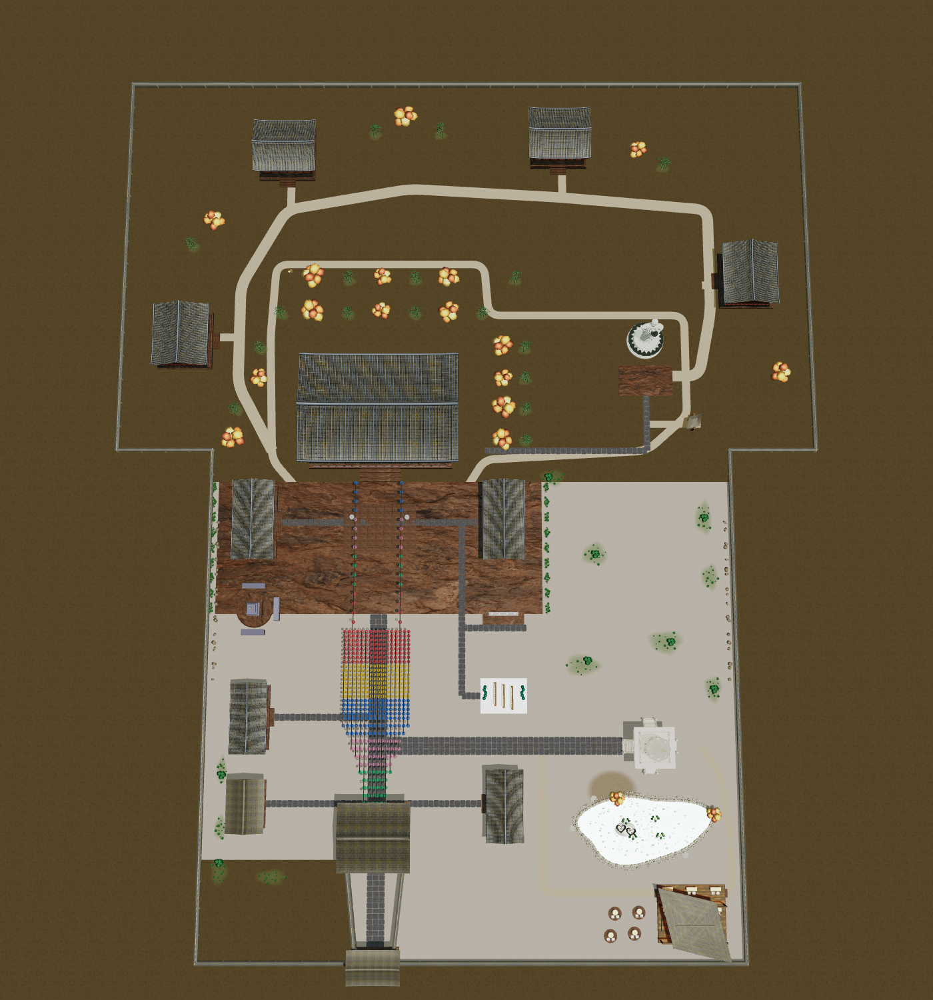
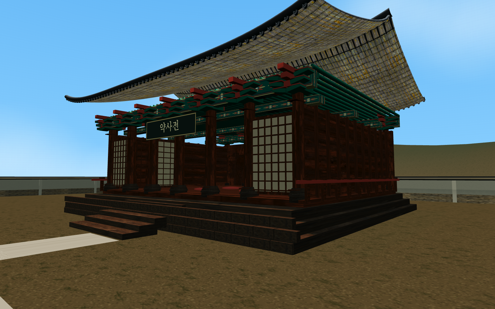
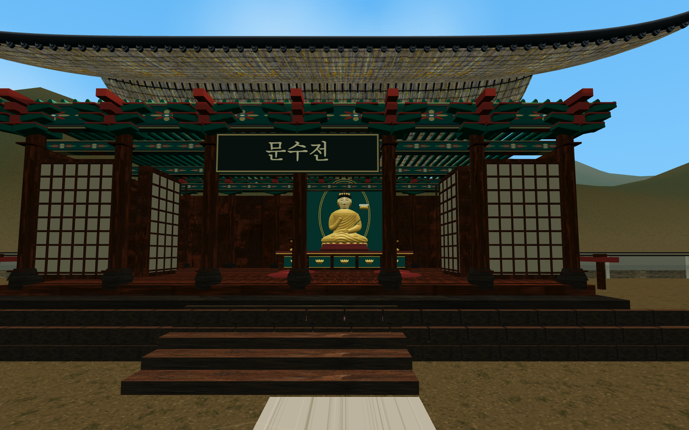
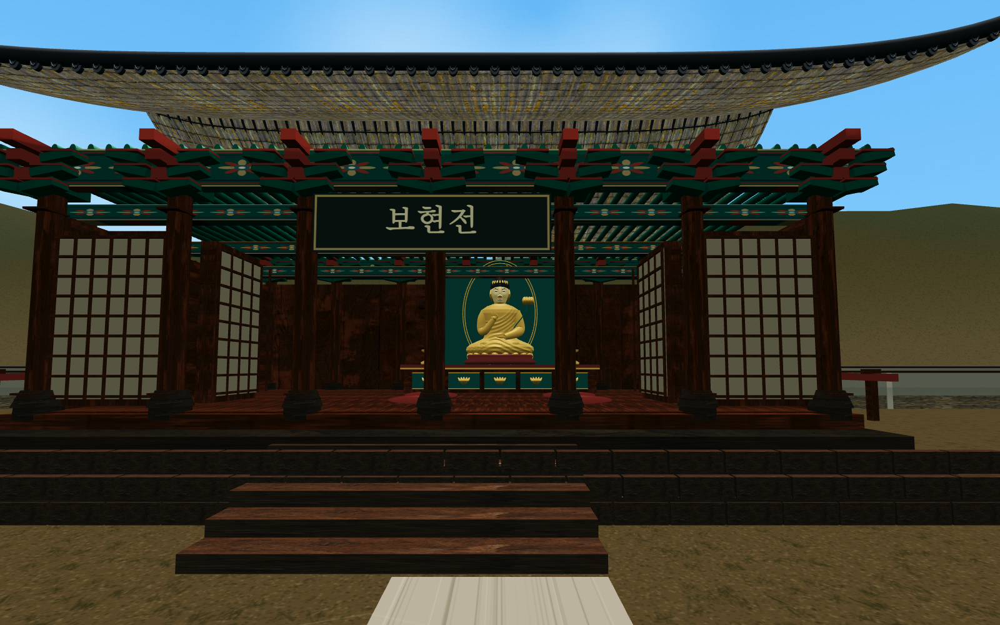
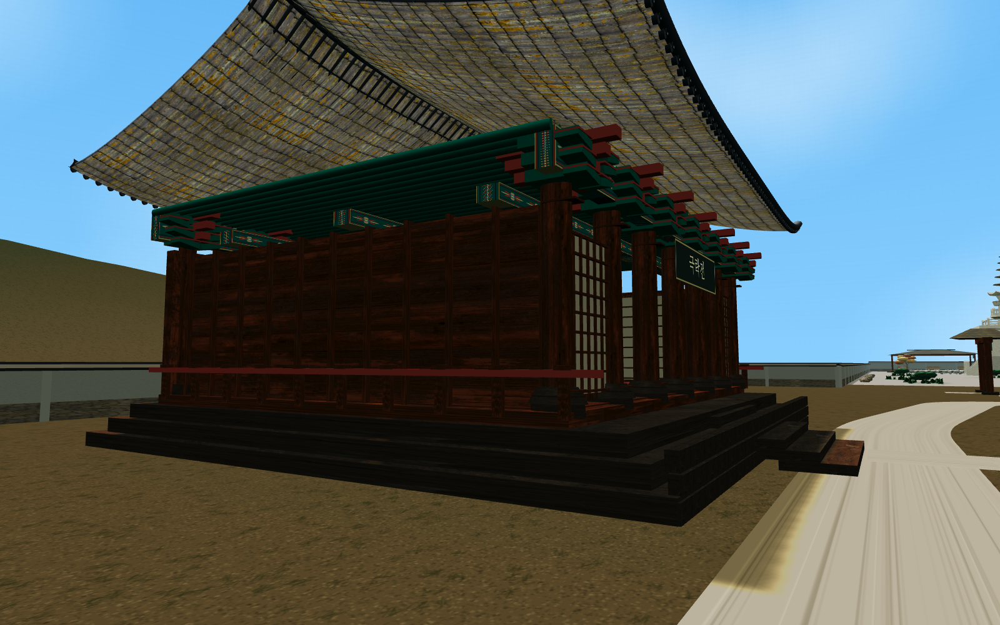
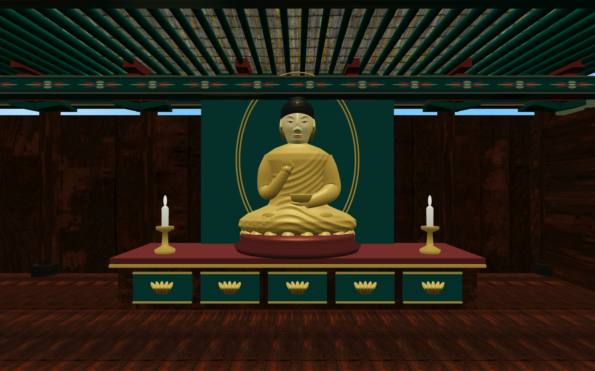
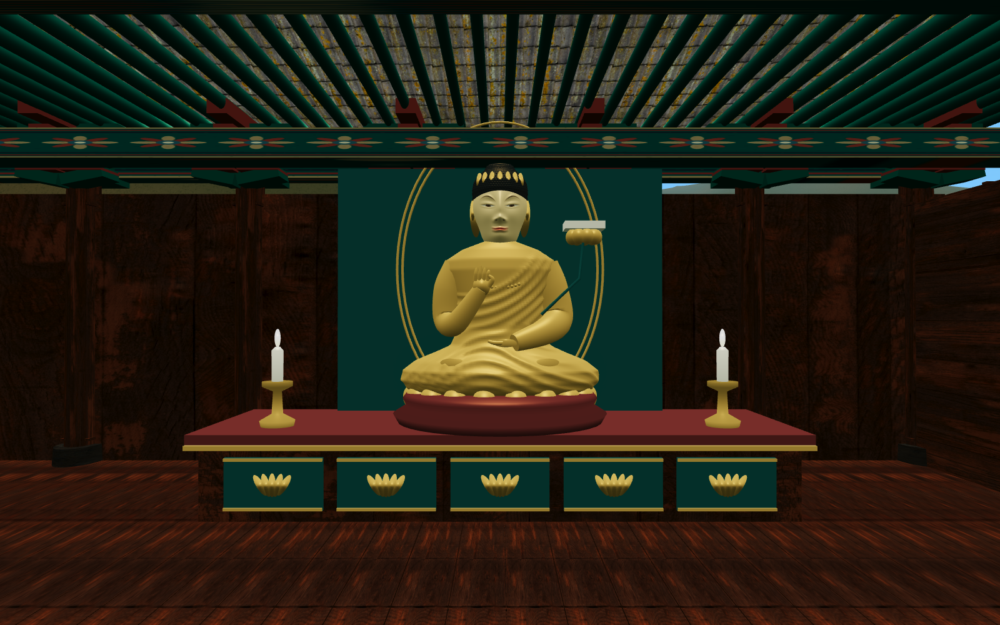
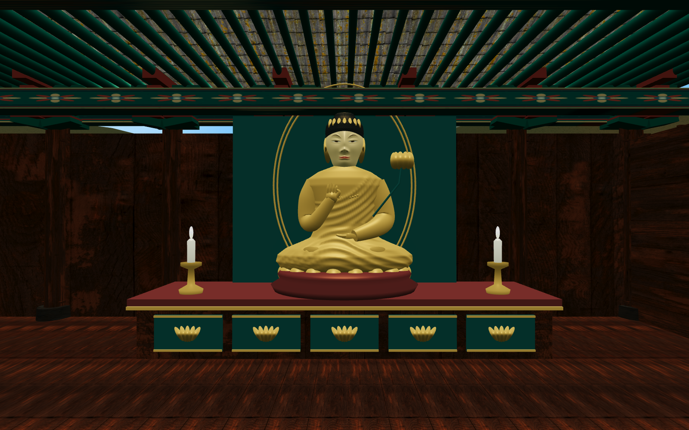
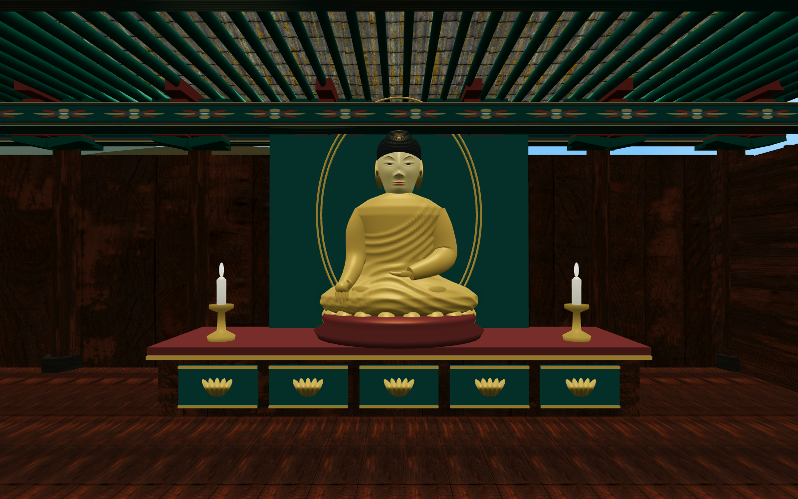

<meta charset="utf-8"><style>*{box-sizing:border-box}body{margin:0;background:#f6f4ec;color:#263f34;font-family:"Apple SD Gothic Neo",sans-serif}h1{font-size:30px;margin:0 0 12px}p{font-size:18px;margin:0 0 22px;color:#657164}.sheet{padding:36px;width:1472px}.map{position:relative;width:1400px;height:1500px}.map img{width:100%;height:100%}.label{position:absolute;transform:translate(-50%,-50%);white-space:nowrap;font-size:17px;background:#233e34ed;color:#fff5dc;padding:5px 9px;border-radius:4px}.label.new{background:#945624f5;border:1px solid #e8bf73}.grid{display:grid;grid-template-columns:1fr 1fr;gap:22px}.grid figure{margin:0}.grid img{width:100%;display:block}.grid figcaption{font-size:20px;font-weight:600;padding:12px 0 18px}.note{margin-top:20px;font-size:17px}</style><section class="sheet" id="map-report"><h1>실제 맵 · 대웅전 뒤편 확장 완료</h1><p>주황색 이름표는 새 전각 4곳 · 기존 시설과 연등·판매 자리는 유지 · 북쪽 ↑</p><div class="map"><span class="label new" style="left:270.88575158312216px;top:502.4558841440052px">약사전 · 약사여래불</span><span class="label new" style="left:427.61219101343147px;top:219.51558984212403px">문수전 · 문수보살</span><span class="label new" style="left:839.2818089374177px;top:200.73080547171827px">보현전 · 보현보살</span><span class="label new" style="left:1125.6945016292632px;top:410.8920614062257px">극락전 · 아미타불</span><span class="label " style="left:569.309740391336px;top:615.6377382038825px">대웅전</span><span class="label " style="left:379.12974818825967px;top:779.2735484274031px">관음전</span><span class="label " style="left:755.8034873584595px;top:779.2735484274031px">지장전</span><span class="label " style="left:972.4534438586547px;top:502.45588414400527px">미륵보살 석상</span><span class="label " style="left:1044.32066476855px;top:629.1000189219715px">개인 공간 입구</span><span class="label " style="left:979.9380387023012px;top:1120.7935782040558px">구름탑</span><span class="label " style="left:968.3406638349175px;top:1246.5520049663212px">연못</span><span class="label " style="left:1044.8684941750362px;top:1390.2332628836562px">쉼터</span><span class="label " style="left:371.01020714797795px;top:1077.023314670711px">인등전</span><span class="label " style="left:757.8428803959837px;top:1209.2938815243945px">종무소</span><span class="label " style="left:367.4032310299439px;top:1209.2938815243945px">범종각</span><span class="label " style="left:562.1191566873883px;top:1254.0309622355105px">천왕문</span><span class="label " style="left:559.8921879767911px;top:1451.7453333505052px">일주문</span><span class="label " style="left:757.0608758227164px;top:1044.4027296510737px">소원패 정원</span><span class="label " style="left:564.8457604475528px;top:1011.9580740286024px">연등 440자리</span></div><p class="note">실제 3D 장면 캡처에 위치 설명만 덧붙인 이미지입니다.</p></section><section class="sheet" id="walk-report"><h1>새 산책길에서 본 네 전각</h1><p>산책길 눈높이의 실제 화면 · 기와·단청·목재 재질은 기존 건축 표현을 재사용</p><div class="grid"><figure><figcaption>서쪽 · 약사전 / 동쪽으로 열린 입구</figcaption></figure><figure><figcaption>북서쪽 · 문수전 / 남쪽으로 열린 입구</figcaption></figure><figure><figcaption>북동쪽 · 보현전 / 남쪽으로 열린 입구</figcaption></figure><figure><figcaption>동쪽 · 극락전 / 서쪽으로 열린 입구</figcaption></figure></div></section><section class="sheet" id="interior-report"><h1>네 전각의 불·보살과 불단</h1><p>입구 반대편 안쪽에 불단 · 방석과 촛불 배치 · 기존 얼굴과 법복 주름 조형을 재사용</p><div class="grid"><figure><figcaption>약사전 · 약사여래불</figcaption></figure><figure><figcaption>문수전 · 문수보살</figcaption></figure><figure><figcaption>보현전 · 보현보살</figcaption></figure><figure><figcaption>극락전 · 아미타불</figcaption></figure></div></section>